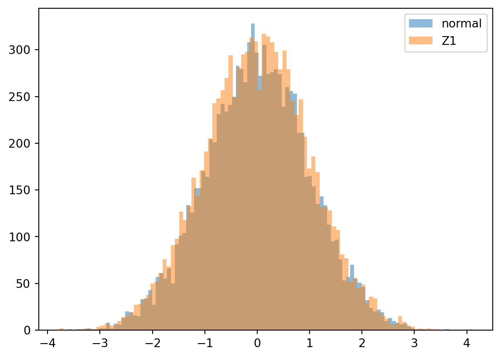
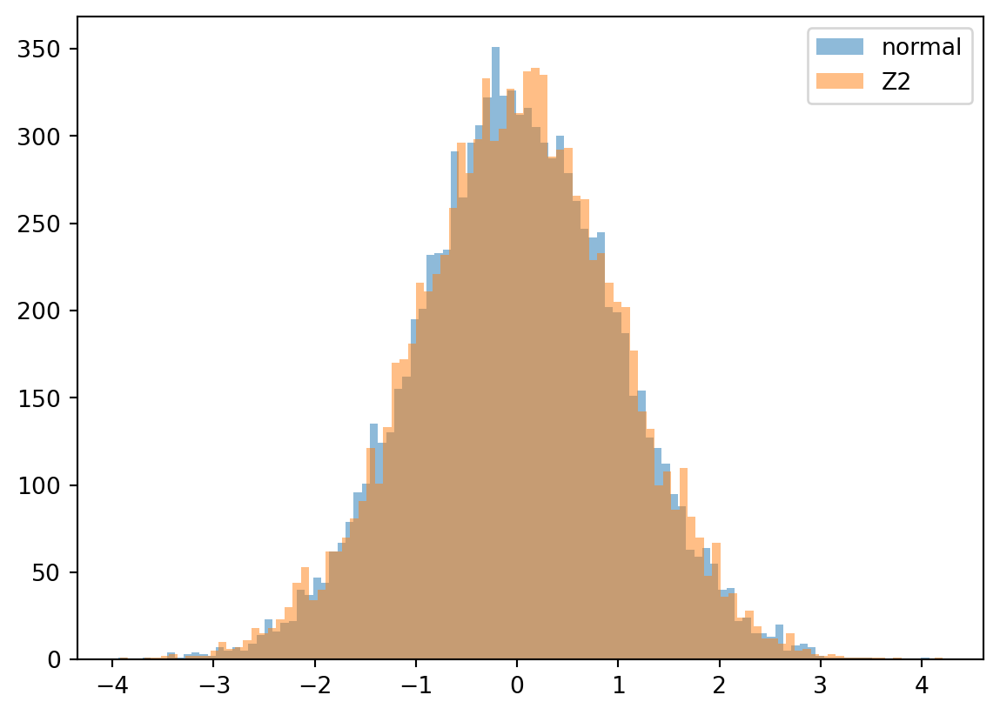
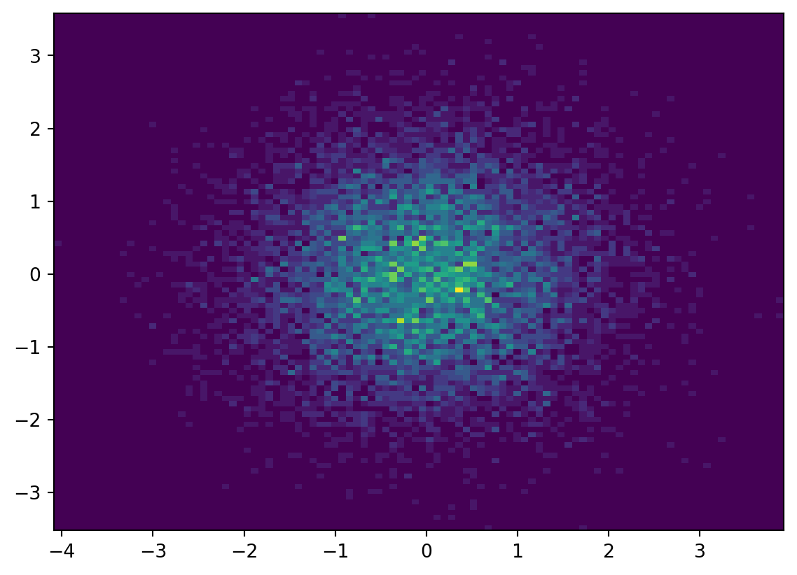

import numpy as np
import matplotlib.pyplot as plt
rg = np.random.default_rng()
N = 10000
bins=100
U1 = rg.uniform(0, 1, N)
U2 = rg.uniform(0, 1, N)
normal = rg.normal(0, 1, N)
Z1 = [np.sqrt(-2 * np.log(u[0])) * np.cos(2 * np.pi * u[1]) for u in zip(U1, U2)]
Z2 = [np.sqrt(-2 * np.log(u[0])) * np.sin(2 * np.pi * u[1]) for u in zip(U1, U2)]A First Course in Stochastic Calculus
Chapter Two Exercises
Solutions to exercises and computer experiments
Computer Experiments
2.1 The Box-Muller Method
Let \(U_1 \sim U(0,1)\) and \(U_2 \sim U(0,1)\). Define random variables
\[ Z_1 = \sqrt{-2\log(U_1)} \cos(2 \pi U_2) \] and \[ Z_2 = \sqrt{-2\log(U_1)} \sin(2 \pi U_2). \]
Generate \(10000\) samples of \((Z_1, Z_2)\) and plot the histograms of each random variable.
plt.hist(normal, bins=bins, label='normal', alpha=0.5)
plt.hist(Z1, bins=bins, label='Z1', alpha=0.5)
plt.legend(loc='upper right')
plt.plot()[]
plt.hist(normal, bins=bins, label='normal', alpha=0.5)
plt.hist(Z2, bins=bins, label='Z2', alpha=0.5)
plt.legend(loc='upper right')
plt.plot()[]
plt.hist2d(Z1, Z2, bins=bins, density=True)
plt.plot()[]
\[ \newcommand{\Cov}{\operatorname{Cov}} \newcommand{\Var}{\operatorname{Var}} \newcommand{\E}{\operatorname{E}} \newcommand{\P}{\operatorname{P}} \]
Exercises
2.2 Sum of Exponentials is Gamma
The sum of \(n\) IID random variables with exponential distribution with parameter \(\lambda\) is gamma with pdf
\[ \begin{align} f(x) = \frac{\lambda^n}{(n-1)!}x^{n-1} e^{-\lambda x} &, x \geq 0. \end{align} \tag{1}\]
Proof:
The pdf of the sum of two IID random variables is the convolution of the pdfs of the summands.
Therefore, \[ \begin{align} f(x) &= \int_{0}^{x} \lambda^2 e^{-\lambda(x - y)}e^{-\lambda y} dy \\ &= \lambda^2 e^{-\lambda x} \int_{0}^{x} dy \\ &= \lambda^2 x e^{-\lambda x}. \end{align} \]
So, it’s at least plausible.
To prove the result, we use the MGF of the exponential random variables \(X\) with parameter \(\lambda\):
\[ \begin{align} \E(e^{tX}) &= \frac{\lambda}{\lambda -t} &, t < \lambda. \end{align} \]
Let \(X_i\) be a collection of IID exponential random variables with parameter \(\lambda\). Then \(Z = \sum X_i\) satisfies
\[ \E(e^{tZ}) = \prod_{i=1}^n \E(e^{tX_i}) = \frac{\lambda^n}{(\lambda -t)^n}. \]
Suppose that \(Y\) has pdf (Equation 1), then for \(t < \lambda\) we see that be repeated integration by parts
\[ \begin{align} \E(e^{tY}) &= \int_0^{\infty} e^{tx} \frac{\lambda^n}{(n-1)!}x^{n-1} e^{-\lambda x} dx \\ &= \int_0^{\infty} \frac{\lambda^n}{(n-1)!}x^{n-1} e^{(t -\lambda) x} dx \\ &= \int_0^{\infty} \frac{\lambda^n}{(n-1)!} x^{n-1} \frac{(-1)^n}{(\lambda -t)^n} \frac{d^n}{dx^n}e^{(t-\lambda)x} dx \\ &= \frac{\lambda^n}{(n-1)!} \frac{(-1)^n}{(\lambda -t)^n} \int_0^{\infty} x^{n-1} \frac{d^n}{dx^n}e^{(t-\lambda)x} dx \\ &= \frac{\lambda^n}{(n-1)!} \frac{(-1)^n}{(\lambda -t)^n} (-(n-1)\int_0^{\infty} x^{n-2} \frac{d^{n-1}}{dx^{n-1}}e^{(t-\lambda)x} dx) \\ &= \frac{\lambda^n}{(\lambda - t)^n} \frac{(-1)^n}{(n-1)!}(-1)^{n-1} (n-1)!(e^{(t-\lambda)x}\rvert_0^{\infty}) \\ &= \frac{\lambda^n}{(\lambda - t)^n} (-1)^{2n-1} (-1) \\ &= \frac{\lambda^n}{(\lambda -t)^n}. \end{align} \]
The MGF characterises the distribution of the random variable so the proof is complete.
2.3 Why \(\sqrt{2 \pi}\)?
Using polar coordinates
\[ \begin{align} \int_{-\infty}^{\infty}\int_{-\infty}^{\infty} e^{-x^2 - y^2} dx dy &= \int_0^{2 \pi} \int_0^{\infty} r e^{-r^2} dr d\theta \\ &= 2 \pi \int_0^{\infty} r e^{-r^2} dr \\ &= 2 \pi \int_0^{\infty} \frac{-1}{2} \frac{d}{dr}(e^{-r^2}) dr \\ &= - \pi e^{-r^2} \rvert_0^{\infty} \\ &= \pi. \end{align} \]
Now, \[ (\int_{-\infty}^{\infty} e^{-x^2} dx)^2 = \int_{-\infty}^{\infty}\int_{-\infty}^{\infty} e^{-x^2 - y^2} dx dy = \pi. \]
Therefore \[ \int_{-\infty}^{\infty} e^{-x^2} dx = \sqrt{\pi}. \]
I think the author may have meant for us to show that
\[ \int_{-\infty}^{\infty} e^{-x^2/2} dx = \sqrt{2 \pi} \]
which follows by a change of variables \(x = y/\sqrt{2}\)
\[ \begin{align} \int_{-\infty}^{\infty} e^{-x^2} dx &= \int_{-\infty}^{\infty} e^{-(y/\sqrt{2})^2} \frac{1}{\sqrt{2}} dy \\ &= \frac{1}{\sqrt{2}} \int_{-\infty}^{\infty} e^{-y^2/2} dy = \sqrt{\pi}. \end{align} \]
2.4 Box-Muller
Let \(U_1 \sim U(0,1)\) and \(U_2 \sim U(0,1)\). Define random variables
\[ Z_1 = \sqrt{-2 \log(U_1)} \cos(2 \pi U_2) \] and \[ Z_2 = \sqrt{-2 \log(U_1)} \sin(2 \pi U_2). \]
Show that \(Z_1\) and \(Z_2\) are independent standard Gaussians.
Change to polar coordinates.
Note that
\[ R = \sqrt{Z_1^2 + Z_2^2} = \sqrt{-2 \log(U_1)} \]
and
\[ \tan(\Theta) = \frac{Z_2}{Z_1} = \tan(2 \pi U_2). \] so \[ \Theta = 2 \pi U_2 \].
The random variable \(R\) has CDF
\[ \begin{align} F_R(r) &= P(R \leq r) \\ &= P(\sqrt{-2 \log(U_2)} \leq r) \\ &= P(U_2 \geq e^{-r^2/2}) \\ &= 1 - P(U_2 < e^{-r^2/2}) &= 1 - \begin{cases} 0 & \text{if } e^{-r^2/2} <0, \\ e^{-r^2/2} & \text{for } 0 \leq e^{-r^2/2} < 1, \\ 1 & \text{if } e^{-r^2/2} \geq 1 \end{cases} \\ &= 1 - e^{-r^2/2}. \end{align} \]
Obviously, \(\Theta \sim U(0, 2 \pi)\). Therefore, \((Z_1, Z_2)\) has the same distribution as \((X, Y)\) where \(X, Y\) are IID standard Gaussians.